Overview
Monyo is a new mobile app and card product, built separately from Credit Genie. The first release went to a small invited group, and success was measured by delivery: members onboarded with an activated card. I designed the foundation beneath the card, including sign-in, onboarding, linked accounts, and settings, using the Monyo Design System.
Constraints that shaped the design
- No passwords, ever. Sign in with Apple or Google only, so there's no reset flow to design.
- No navigation bar. Members land directly on their card.
- Every step required. Nothing optional in the first release.
- Built to grow. The card view is self-contained so it can become one tab of a future three-tab app.
The onboarding flow
- Sign up with Apple or Google. Legal terms are accepted by continuing, with links to each document.
- Verify your phone by entering a phone number, plus one consent for texts.
- Enter the code: a six-digit one-time passcode (OTP) sent by text.
- Enter your date of birth.
- Connect a bank through Plaid Link. A checking account is required, and members with more than one eligible account pick their primary one.
- Confirm your address, only if we couldn’t get one from Plaid. Members search for it, or enter it manually.
- Turn on biometrics, like Face ID.
- Welcome. A short animated welcome, shown once.
- Land on the card application.
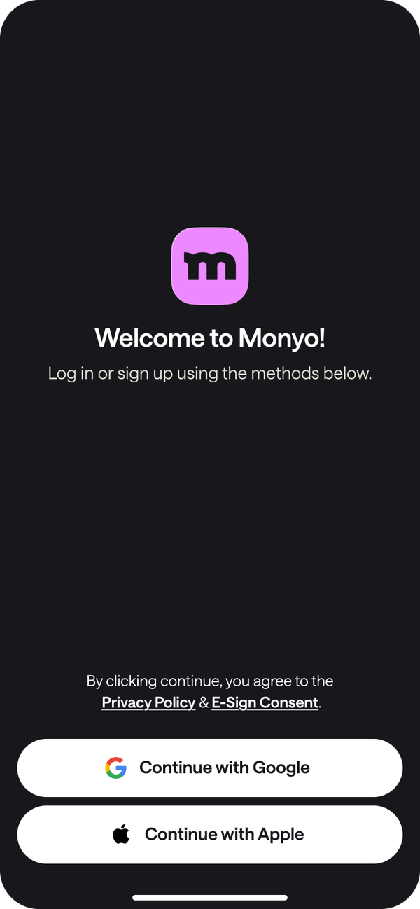
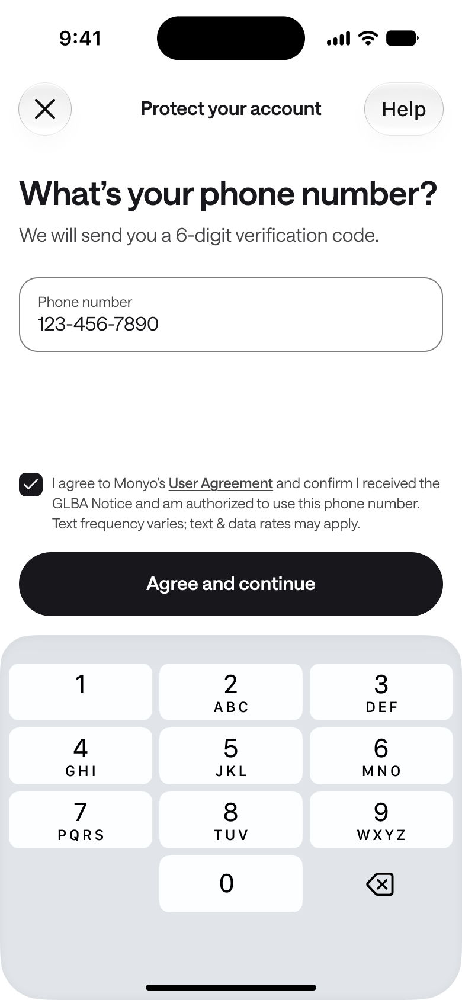
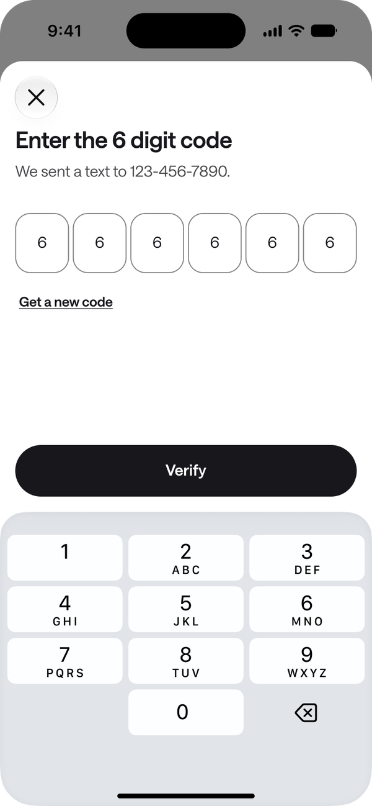
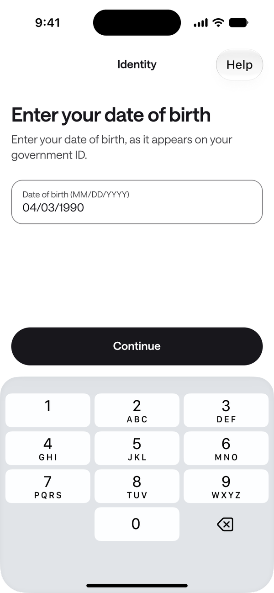
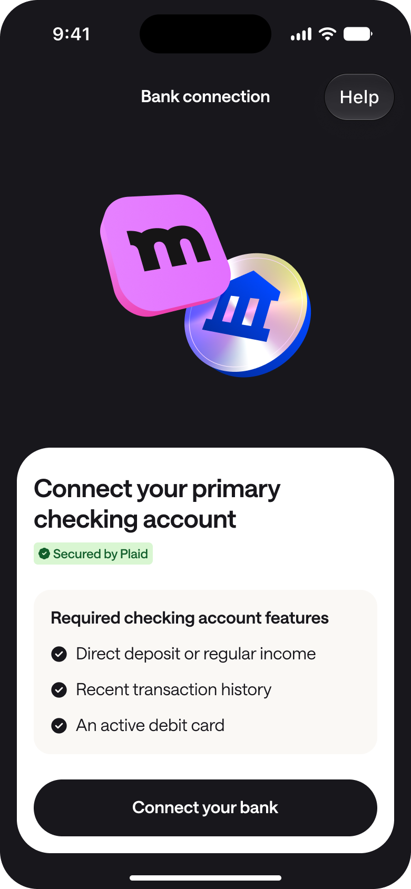
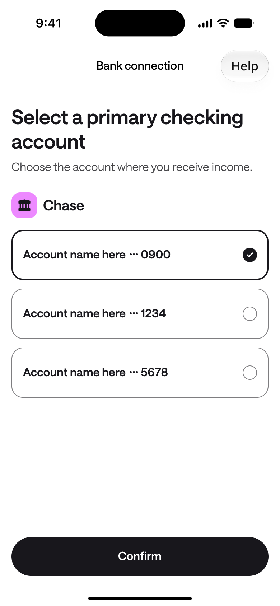
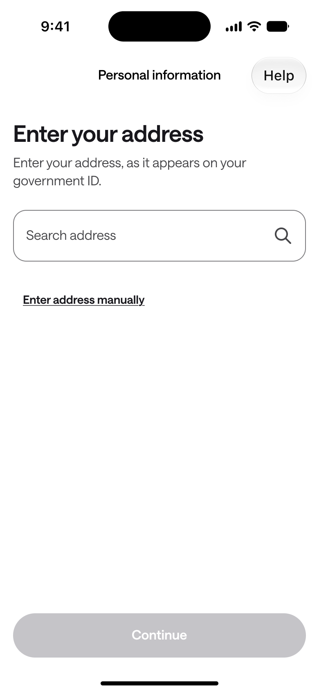
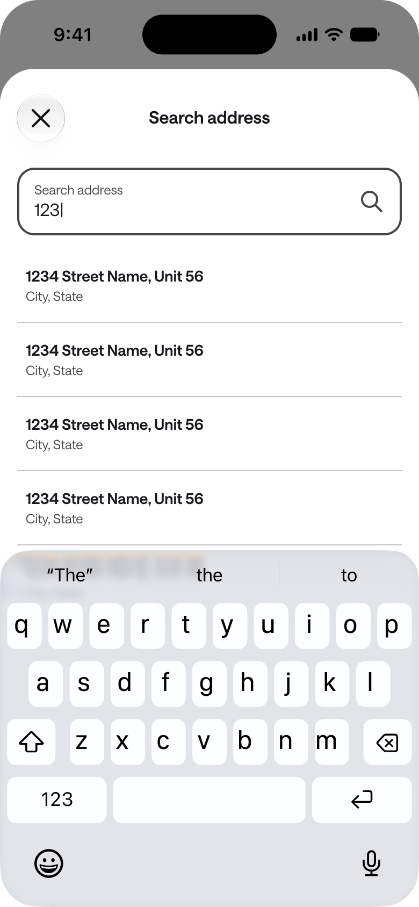
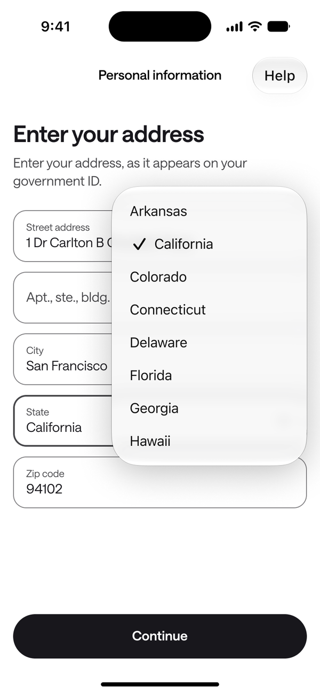
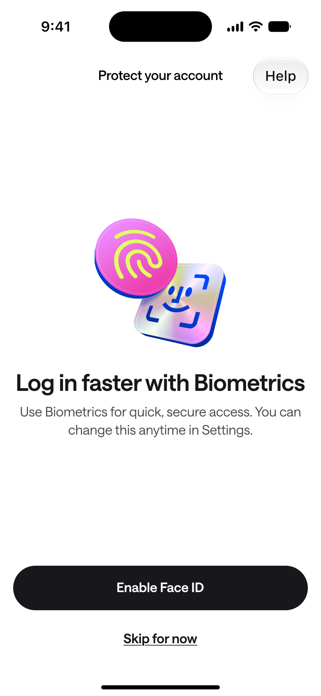
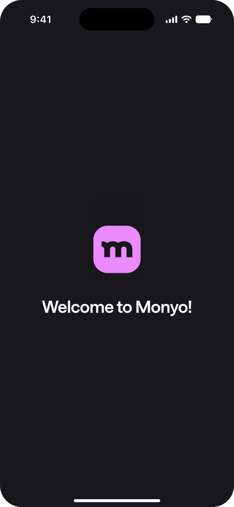
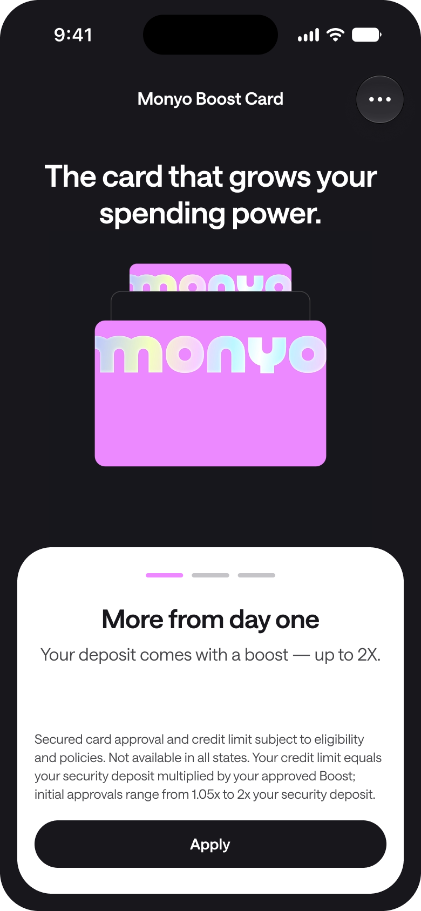
Design decisions
- Provisional names. Names from Apple or Google are prefilled but labelled “legal first name” and “legal last name”, signalling that they need checking.
- Help everywhere. A help button sits top-right on every onboarding screen.
- Pick up where you left off. Progress saves after each step, so a member who quits after connecting their bank resumes at the next step.
- Clear recovery. A failed address check offers a direct path to edit the address and try again.
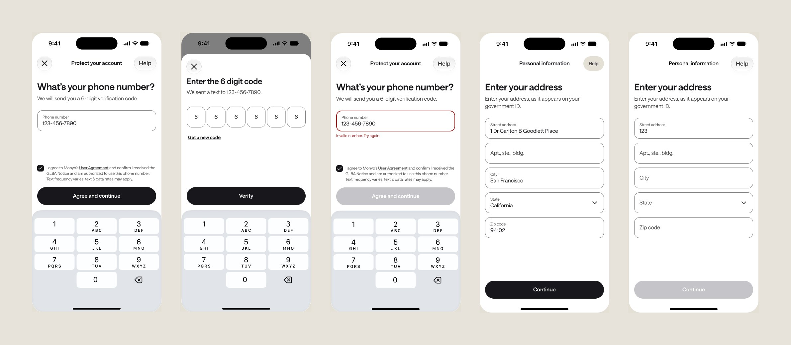
Profile and settings
Settings is split into two groups. Card settings covers autopay, payment and deposit history, and statements. Account covers personal information, bank accounts, biometrics, and help. A status badge on autopay shows at a glance whether it's on or off.
Autopay is a choice between two options, each with a short note on what it means for fees, and the authorization language sits right above the button. Help opens a sheet with one tap to copy the support email.
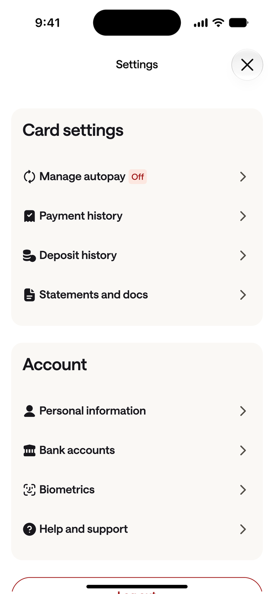
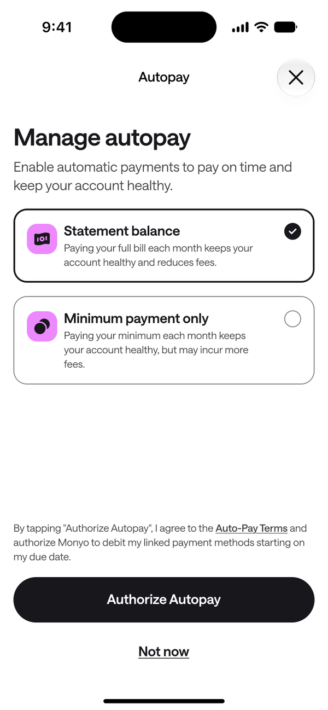
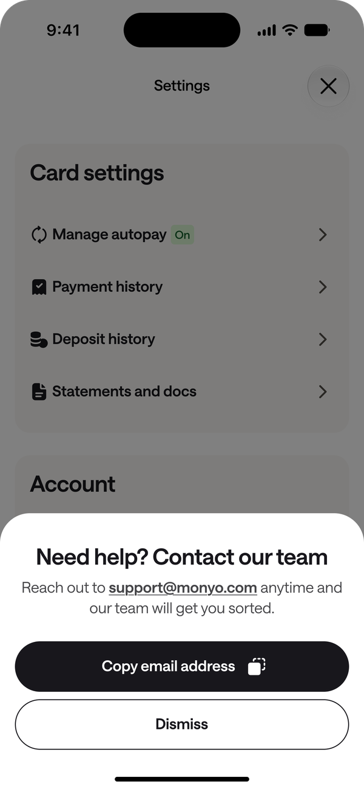
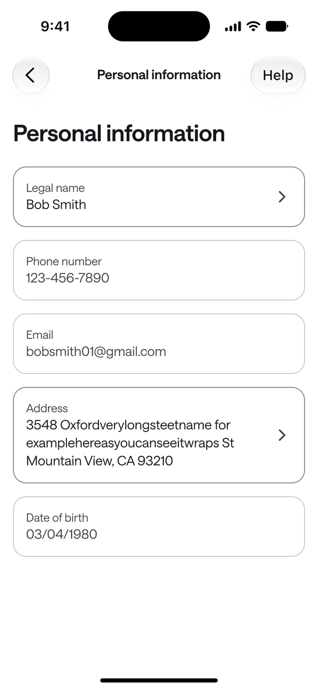
Disconnecting a bank never leaves people stranded. A confirmation explains what happened, and the bank accounts screen turns into an empty state with an error card and a single way forward.
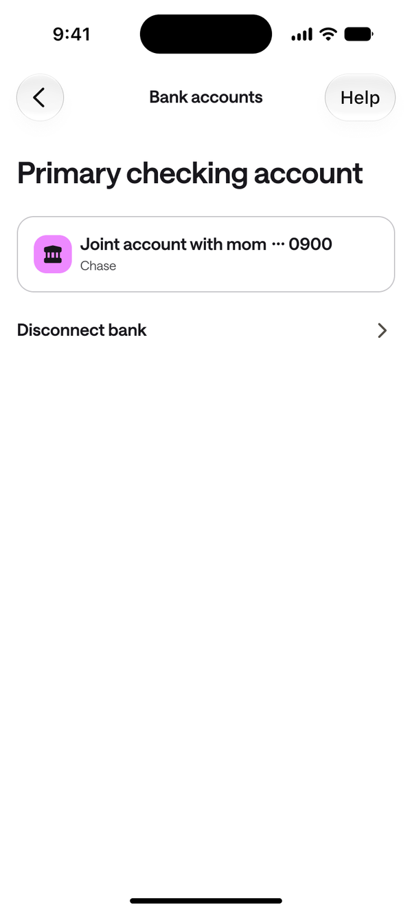
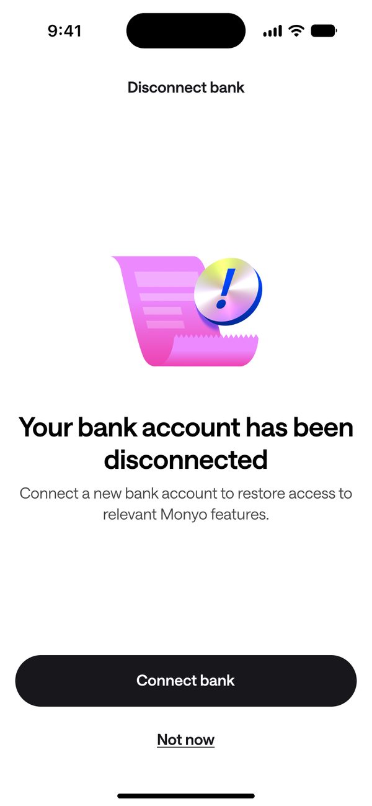
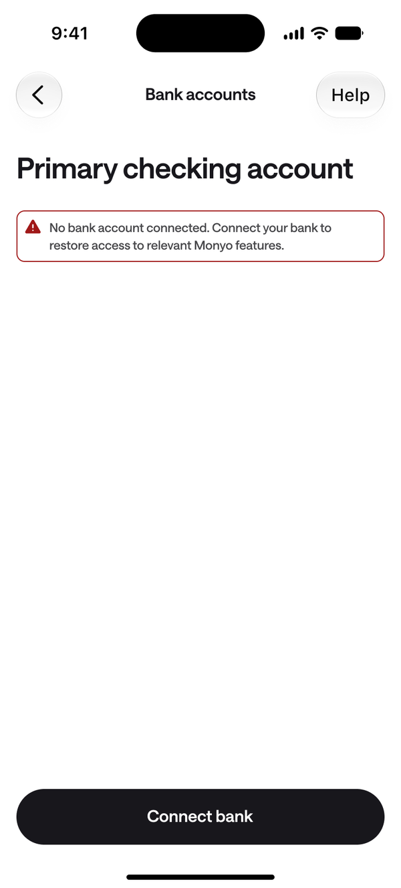
Early results
Monyo launched to an invite-only group, with a goal of 100 customers by the end of the month. As of November 10, 2026:
- 26
- customers signed up
- 21
- with an active bank connection
- 15
- active card accounts, with 5 more cards on the way